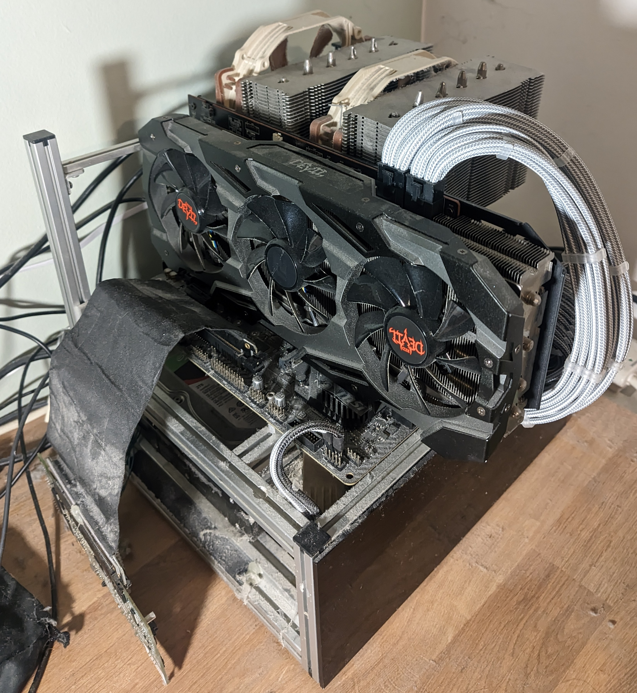

18th February 2026
As I've started getting back into homelabbing and self hosting I thought it would be fun to document some of what I get up to, the specifics and quirks of my setup and some of the changes I plan to make. My hope is for this to be a 6-monthly evolving log of how my setup changes and grows.
Where I live Virgin Media is the only option for anything faster than VDSL, and they charge through the nose for high speed connections, so I settles on a 250Mbit connection through their DOCSIS network and their supplied modem/router. Their modem router box has the wifi network disabled and a Google nest pro mesh plugged into its ethernet port, which handles all the actual routing, DHCP and DNS settings. There's 3 additional Nest wifi pro mesh nodes around the flat, one in every major room. They have one ethernet port that you can use to feed a device, so in the bedroom it goes to my desktop, in the main room it goes to the TV and in the office it goes to an 8 port gigabit switch, which goes to the server, my partner's desktop and has a couple spare ports for when I get around to setting up my Duet Maestro based 3D printer, which also uses ethernet. I'm forced to use mesh wifi instead of hard wiring as the walls in my flat are solid concrete and you cant just run wires behind it. In general the Nest Wifi Pro's offer *decent* performance, however they really dropped off when my neighbours set up 6Ghz WiFi. The massive attenuation of the concrete walls does them no favours either, when I first moved I set up the original nest wifi's and to be blunt they were unusable. The Nest Wifi Pro's dont let you do very much advanced configuration around channel management, you definitely don't get VLANs or anything like that so it's not massively capable from a management perspective, but it's a very good plug and play solution.
Several fibre to the home providers are building out in my area, so I'm hopeful in the next few months I'll be able to get a spicy gigabit connection for less than I currently pay for 1/4 that. I'm going to get them to punch in to a more sensible location than the porch where the current coax comes in, if it went into the office the server could get a direct wired connection to the internet which would make my life a lot easier as when it's doing heavy streaming or transfers the internet performance of other users tends to suffer as it's all going over the mesh.
The lack of competent management capabilities on the Nest Wifi Pro's was fine when I moved in, but this year I'm A: building out my smart home setup significantly more than before and B: trying to be more cautious about information security (gotta love the impending technofacism!). I want to be able to segregate untrusted devices off into their own VLANs so I dont need to worry about my whole network being compromised because of some buggy random IoT doodad. As much as I'd like to keep everything 100% offline, that's not possible for some things (although I am trying my best to keep as much offline as possible). Furthermore the idea of having Google devices with their analytics you can't really disable running all my networking does make me feel somewhat uneasy. I installed a full Unifi system at my parents home years ago, back when 802.11n was state of the art, and have progressively upgraded it since, and I've never found it to be anything other than a really pleasant experience compared to screwing around with PFsense and other such systems. My personal philosophy is systems like the internet should not be a major project in and of themselves, they are merely a vehicle for completing other, more interesting projects and for that the Unifi ticks every box I'd want it to. Once I'm back from the Twing Raid 2026 I'll have more money and time to invest in sorting this properly with some fancy Unifi kit to get some proper bandwidth going again. Currently the networking is the bottleneck for SMB transfers to and from the server, and high bandwidth media streaming can also struggle a bit, so this is high on the priority list to sort once and for all.
I only have one small server set up (an artifact of me having to pay UK electricity prices!) at my home. It's a gen8 HP Microserver running 16GB of RAM, a Xeon E3-1260L CPU and TrueNAS 25.04. It's packed full of drives, with each 3.5in bay having a Toshiba MG07 14TB HDD, setup in RAIDZ5, there's ~40TB of usable storage and I can lose one drive without losing any data. In the ODD bay I've put an Intel 480GB datacenter SSD. The SSD has no redundancy but gets mirrored frequently to a dataset on the bulk array. The server has a small APC 500VA UPS powering it that I've connected up with the little serial cable too for automatic shutdowns when the UPS gets low. The Microserver has a lovely internal usb slot for booting from internal thumbdrives, however this is the slot of deception and evil. Every time I've booted a NAS from an internal USB drive that drive has failed and it's bitten me in the arse. Fortunately the Microserver also has an internal MicroSD slot, and you can chuck a high endurance MicroSD card in there and boot from it which should be substantially more durable. It certainly hasn't given me any grief so far. I am a fan of the microserver, especially given the prices you can pick one up for these days. If you're just doing storage you'll struggle to beat a Gen7 N40 or N54 for price to capability. They can be had for sub $100 and at that price point you're looking at locked in Synology boxes which is a bit mid in comparison to a full featured PC. I still maintain a gen7 at my parents as a smaller NAS for my parents pictures. It used to run a Minecraft server too but it absolutely didn't have the guts for the cursed vanilla redstone automation I cooked up.
Software wise it's running quite a few containers. All apps and app data lives on the intel SSD for better performance. The replication setup I'm using definitely isn't ideal but the Microserver doesn't have any more SATA ports to add redundancy. The biggest limitation to the server is RAM. HP put a very hard limit of 16GB in it, I've never seen anyone put more than that in there, so you can't go nuts with the services. I will definitely run out of RAM before CPU. Most of the containers are installed through the TrueNAS Apps system, but some are custom apps where you just provide raw docker compose YAML, it's a very flexible system that gives you the easy click and go when hosting simple bits, but also lets you dig into the weeds and load up custom containers.
For remote access into the home network I use Tailscale, it's a doddle to set up and just works. It's the only container on the server with full host network access in docker as it needs it to do all its schenanigans. I've also set up the server to be able to be an exit node if I'm abroad and need to access services geoblocked to the UK. My only complaint about tailscale is local IPs and mDNS hostnames do not resolve like they do on the LAN, which is a bit annoying. I've settled for setting up a remote.my.domain subdomain that resolves to the server's IP on the tailnet which does the trick. An alternative option would be setup WireGuard, which I've deployed using wg-easy at work before, but that enails forwarding a port and either getting a static IP or using dynDNS, so that may want to wait until Olilo set up service in my area
I've maintained a pretty decent home media collection over the years and previously used to boot up my desktop and spin up a plex server as and when I wanted to watch something on the TV from it. This was, to put it mildly, a moderate pain in the arse given the boot times of my desktop. It also tended to be rather flaky, sometimes the plex tv app just wouldn't find the server. So now after copying the whole lot over to the server (which took a little while over mesh wifi), I now have a Jellyfin container running full time for media streaming. As a bonus Jellyfin doesn't get annoying about streaming to mobile devices or remotely like Plex does. Jellyfin gets to bypass the standard NGINX setup because the Apple TV Jellyfin app refuses to support TLS 1.3, and you will be unable to log in or stream if you try, so I had to go back to the forwarded port to make it play ball.
All my smart home stuff pipes through into a Home Assistant container so I can control lights, monitor temperatures and humidity in each room and tweak a lot of other things. This yea I'm also hoping to control the windows and heating from home assistant too. My Quinetic switch translator uses MQTT, as does OpenMQTTGateway for reading RH/T from really cheap Vauno sensors, so I run a Mosquitto container for everything to connect to. Mosquitto gets to bypass the NGINX setup because I forgot the password to reconfigure the OpenMQTTGateway ESP32, so I didn't want to screw around with those setups, but Home Assistant is behind NGINX. I wanted remote access to work without having to permanently be on the VPN, so there's a cloudflared container and a Cloudflare tunnel set up that ensures Home Assistant is always externally accessible. Mosquitto is very nice because it absolurely sips RAM, it only uses like 10 MB.
I'm still on the fence about whether to keep the Microserver as it is long term. It's CPU is getting a little long in the tooth, and 16GB RAM is borderline in terms of capabilities for what I want. I saw a mod kit to put a modern mITX motherboard in the little tray and I found some pretty cool AliExpress Ryzen based NAS motherboards which might be a fun project, but it's also reliable as is, and I think if I were to go for a major upgrade I'd just build out something totally fresh from scratch, perhaps with a few more drive bays and a bit more PSU headroom. Those are all very expensive projects however, and there are definitely some smaller things I want to do in the mean time though.
The logical next step from setting up NGINX to manage traffic in and out is to set up an OIDC provider to manage authentication. Whilst this isn't strictly necessary given how it's only accessible on the LAN (the credentials I only give to people I trust) and VPN it's good practice, and it's always useful to learn how to do these things. I've been eyeing up Authelia because it promises an extremely lightweight low memory usage container and fairly painless setup, and memory is the biggest limitation in my server by a country mile.
Printers are evil, frustrating and michevious machines which only cause trouble and strife. The best printer I've ever used is my Brother HL-1110 which has one button and a USB cable, however the drivers can get rather irritating, so I want to run a CUPS container and pass the USB device through to it sp the printer can be accessed over the network. I've been experimenting with this for a while, but it's rather annoying to get working reliably so I've shelved the idea for now, but every time I need to print something I'm reminded it would be really nice if I could access the printer over the network using normal IPP drivers, so when I'm feeling strong enough I might dive back into this.
Following on from the moving away from Google WiFi is also reducing my dependence on Microsoft GitHub, whilst I'm not necessarily in the same boat as groups like the Zig team, who recently moved to codeberg for very good reasons, it is a very large single point of failure for a huge amount of my work, and should my account get banned or UK-US relations deteriorate I don't want my projects trapped. Hell this webpage is hosted using GitHub pages! Provided I have the resources free on the server I'm hoping to setup a Gitea instance that can keep my github mirrored, as well as any other interesting repos I find before they get vanished. Gitea will probably be a pretty hefty container, but there's a little bit of RAM going free.
If you try and transcode a high bandwidth video stream on Jellyfin on my server it will absolutely crap itself. The Xeon CPU has no hardware transcoding support AFAIK, and you can really tell. A small slot powered GPU would solve that, and whilst losing that expansion slot for a NIC if I want to do 10g ethernet down the line does suck a bit I should still be able to bond the two 1G ports it's got for more performance, and it's an all spinny drive array anyway so I'm not expecting to need the speed. I'm on the fence about exactly what GPU however, whilst something a little more dated like a Tesla P4 would do transcoding fine and can be had for $80 ish, I've also been experimenting a little with local LLMs, and would need something with a bit more juice for that, perhaps a T4, A2 or L4. There's not a whole lot of info out there on LLM inferencing performance with the T4 or A2, and the L4 is, to put it mildly, bloody expensive, so I might just get the best I can afford when I have some spare money and see what I can make work with it. Alternatively I could try and rent each one of these gpus for a bit and test it for my workload and see before investing a huge amount into a GPU that might disappoint.
I've been eyeing up a new laptop for a while, and after seeing the 39c3 talk by Sven from the Asahi Linux team I decided to bite the bullet and give Asahi a go on a Macbook to see if it was a usable daily driver for my specific workflow. I scored an absolute bargain on a slightly beaten up and well loved M1 MacBook Air that was being sold at a steep discount with a "Broken screen" which was actually just the glass fascia piece at the bottom of the display and not the display itself. I've been using it for the last two months and, my initial suffering getting full disc encryption to work aside, I've been very happy with it. It's really snappy, the battery life is positively stellar and the audio absolutely slaps beyong belief. My primary issue using it day to day is 8GB RAM absolutely isn't enough for my work, and the kernel semi frequently kills processes to keep things ticking along. A more minor gripe is I cant make it hibernate once it drops below a certain battery level if its already in sleep, which means if I leave the laptop in my bag for a day or two I come back to a completely dead battery, so dead the RTC has lost time, which can't be good for the long term health of the battery. After a few months I think I'm going to upgrade to an M2 pro with ooldles of RAM, or should the Asahi team make some good progress with M3 bringup perhaps even an M3 Pro.
Prior to the MacBook my main laptop for getting stuff done for the last 5 years has been a Dell Latiture 7390. It's got some i5, 16GB of RAM and was by and large very dependable. For reasons I couldn't really explain I decided to install elementary OS on it, which meant being stuck on essentially Ubuntu 20.04, and by the time I replaced it that was proving rather annoying as lots of apps I wanted to use had been built with new libc versions and wouldn't run. The reason I finally decided to replace it was the keyboard broke, and whilst repairing that I botched something and the fan started rubbing and making a right racket. Otherwise it was a very dependable daily laptop, I never had any other durability issues with it and I didn't exactly treat it kindly. Never had any real issues with performance as well, it was just a really solid performer.
I dont even really know how to describe this creation of mine, I've used it for years, it's always been a bit funky but it's easiest to start with the case. The case is a custom Spotswood Test Station I had made in mATX when I was about 16, I've always been a fan of the test bench form factor and saw the spotswood one in an LTT video and wondered if he'd make a smaller one to fit on my desk and the answer was yes. At some point in its life I ordered and fitted some black acrylic panels to the sides of the lower section to panel off my dreadful cable management.

The main bits it's running now are a Ryzen 2700X cooled with an NH-D15, 32GB of ram and a 7800XT GPU. It's definitely a bit dated but considering how much I use it (and current hardware pricing!) I dont think it'll be getting an upgrade any time soon. The power supply is a venerable EVGA 750W unit I modded myself, desoldering the wires I don't use and manually individually sleeving the ones I do so it looks proper nice. A massive pain in the arse I'll probably never repeat but it was worth it for the looks, even 5 years later it just looks slick as can be. The basement of the case is where it gets a bit sketchy, there's a PCIe riser cable descending down from the motherboard into an LSI 9260-8i RAID card, which goes to 3 Seagate Barracuda 2TB drives double side taped in place in RAID 5. Yes it's awful. The side panel can't be present on the third side because when it was the RAID card kept overheating and dying, I've gone through about 3 and keep a spare in the desk drawer now for the next inevitable failure. Despite all the sketchyness it is a really solid and fast 4TB array. I've never had to replace a drive in this array, it's been relatively solid, although if Windows supported it I'd gladly have used ZFS instead.
This machine is the gaming and windows only application station, if I need to whip something up in Fusion 360 or run some weird EXE it gets done on this PC. I don't have much time for gaming anymore but when I do this is a perfectly adequate machine for the sort of games I play at the quality and resolution I play with (2560 x 1080 on an ultrawide monitor). It has a very very annoying issue where it'll blackscreen pretty freqently with use, and I've never been able to trace it down, probably a catastrophic hardware failure in the making but for now it's still plenty usable. If I used it more often I'm sure it'd be a more irritating issue but the worst that has happened so far with it is I lost a DOOM save because DOOM seems to handle ungraceful exits by corrupting the save file.
There's a few other weird bits I keep around that aren't massively interesting but serve a useful purpose. I still have my laptop I used in secondary school around, a Xiaomi Mi laptop Air. It's got another bunch of weird 3D printer and RC drone software on it that's I need to dig in to on occasion, or when something needs windows and I can't take it to my desktop. Those Mi Laptop Air's are oddities, it's got a moderately competent dedicated GPU, so was pretty good for games at the time at the cost of absolutely slaiughtering the battery life. Also fairly often the fingerprint sensor would just decide it had enough and freak out for a while, then sometimes come back.
I scored an original first generation Microsoft Surface Pro at a car boot sale for £25, it is the designated car diagnostic tablet, with all the softwares for talking to various automobiles loaded onto it. Some of them like the SAAB software were a right ballache to get set up so I dread the time it'll need moving onto a new computer but for now it works an absolute treat, well worth the money. It doesn't get internet access as the weird software you get with AliExpress diag tools is probably loaded to the hilt with spicy malware, windows defender certainly treats it like it is.